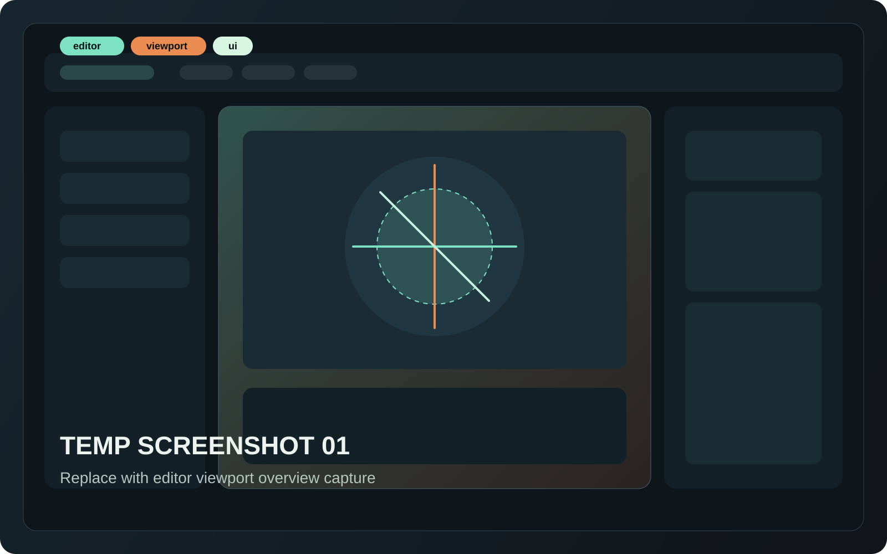
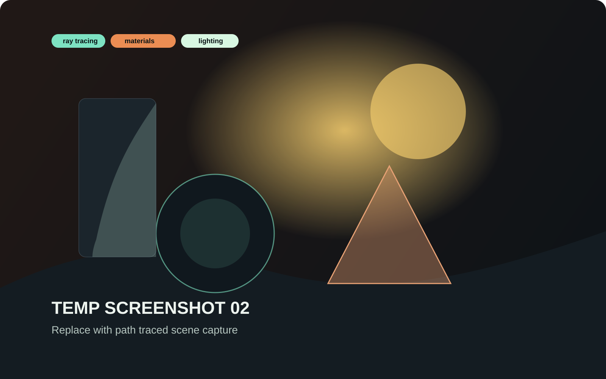
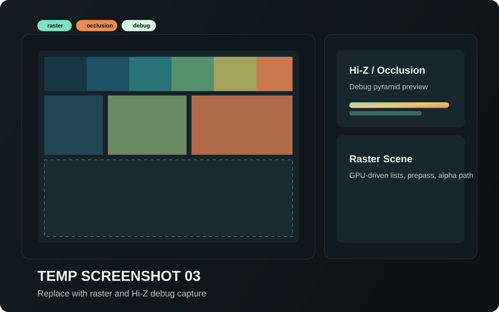
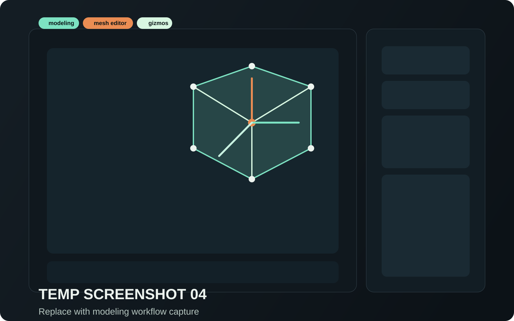

Rendering, editing, and engine tools
Indie engine in active developmentDocs that explain the renderer and the workflow at the same time.
Nova3D is shaping up as a practical scene-focused engine: import assets, inspect the runtime, switch between fast raster work and richer lighting paths, and keep the source-oriented docs close enough that engine iteration does not turn into archaeology.
Source Map
Modules online
Current focus areas
- Renderer split Vulkan runtime today, Metal scaffold in progress
- Editor loop Picking, gizmos, orchestration, early modeling
- Scene path Canonical scene data shared by import, editor, and renderers
Use responsive previews while working, then step into richer lighting and debug passes when needed.
Import content, pick objects, move through the viewport, and keep iteration tight.
Use the landing page as the mental model, then drill into headers once you need exact entry points.
Start Here
Three ways into the codebase
Use the route that matches the question you are trying to answer.
Read the module architecture first
Start with the major engine areas, then move from module overview pages into individual public headers.
Jump to module overviewBegin with backend boundaries
NovaRendererVK holds the live render path, while NovaRendererMTL is laying in backend-owned runtime pieces on macOS.
Open renderer pagesFollow the editor orchestration
NovaEditor is where picking, viewport behavior, startup sequencing, and modeling features meet.
Open editor pagesCapabilities
What Nova3D is already organized around
Ray-traced lighting
Acceleration structures, shader binding setup, and richer lighting are already first-class concepts in the renderer docs.
Fast real-time rendering
Raster pipelines, depth handling, Hi-Z passes, and picking support keep the working view responsive.
Shadow and visibility tooling
Shadow depth paths, frustum culling, occlusion, and debug utilities are visible as explicit engine systems.
Scene import
glTF and OBJ data flow into a shared scene representation instead of taking separate editor and renderer detours.
Shared scene state
Scene data, ECS-backed world state, and renderer-facing caches are documented as one continuous pipeline.
Viewport editing tools
Select, inspect, move, and push into early mesh editing without leaving the main engine flow.
Workflow Map
How the engine work tends to flow
The docs page now mirrors the way you actually traverse the source tree.
Import into shared scene data
Asset loading produces a canonical scene format that both the editor and renderer can consume without duplicate translation layers.
Sync into live world state
Scene containers and ECS records keep runtime ownership, UI state, and renderer-facing data in agreement.
Render, inspect, and debug
Raster, ray tracing, picking, Hi-Z, and shadow passes stay visible as separate concerns instead of disappearing behind one entry point.
Iterate through the editor
Viewport controls, gizmos, and modeling hooks bring the whole loop back to an engine-facing editing surface.
Engine Areas
The main parts of Nova3D
Documentation
Docs tracks that match the current project state
Engine API reference
Module pages, public headers, symbols, responsibilities, and a navigation layout that scales without changing the mental model.
- Browse by engine area instead of by filename dump.
- Filter modules, headers, and symbols from one sidebar.
- Move from overview pages into concrete include points.
Lua scripting reference
The site is intentionally leaving space for runtime scripting docs later without pretending that surface exists today.
That keeps the current docs honest while still reserving room for expansion.
Screenshot Gallery
Visual slots ready for real captures
The placeholders still work, but the framing now feels deliberate instead of temporary.

Editor overview
editorviewportui
Dock layout, viewport tools, and the current scene working surface.

Path tracing
ray tracingmaterialslighting
High-quality lighting path for material and reflection inspection.

Raster and Hi-Z
rasterocclusiondebug
Faster preview path with visibility tooling and debug coverage.

Modeling workflow
modelingmesh editorgizmos
Early in-engine mesh editing and gizmo-driven geometry work.
Next Steps
Where this docs site can grow next
Deep renderer guides
Add focused walkthroughs for descriptors, acceleration structures, shadows, and visibility systems.
Real screenshots and clips
Replace placeholders with captured scenes, tool flows, and before-and-after lighting comparisons.
Scripting track later
When Lua becomes real, the current layout can expand without forcing a site redesign.